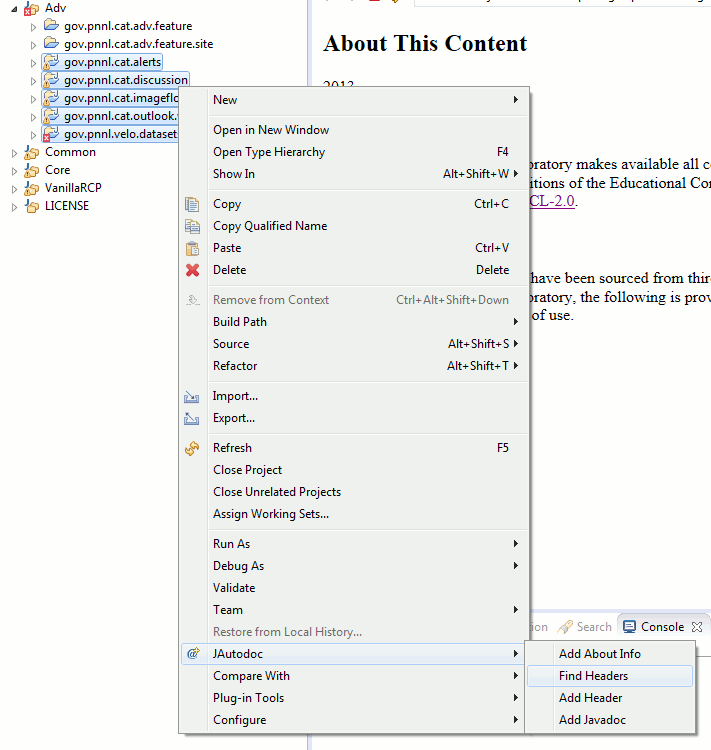
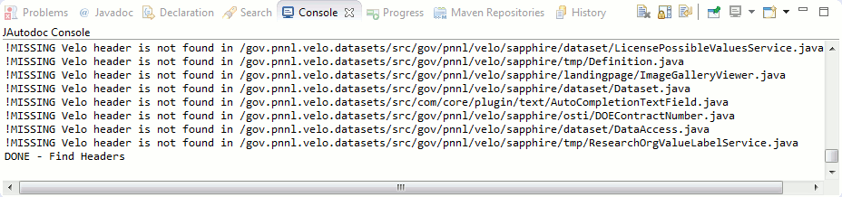
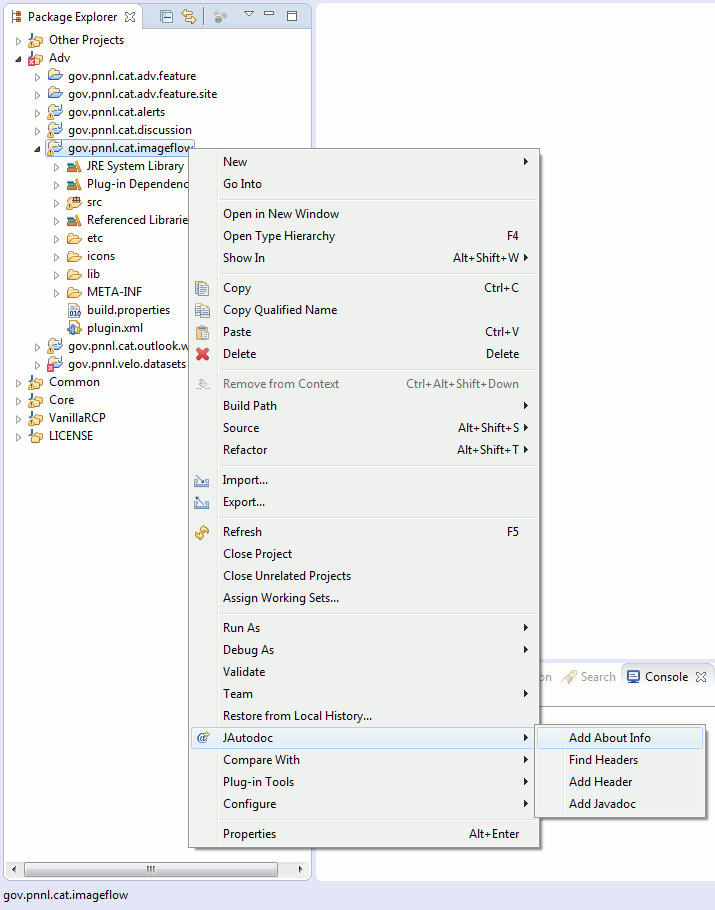

This is a modification of the JAutodocEclipse plugin for use on the Velo workspace.
Installation
You need Eclipse. If you don't already have the application installed, follow these steps in this Confluence document. If attempts at running Eclipse consistently fail, try the solutions below:
Ensure test Eclipse and installed Java are both 32-bit or 64-bit
Run the Eclipse application as an administrator
Edit the eclipse.ini file in your Eclipse folder and add the following text to the beginning:
Copy and paste net.sf.jautodoc.mod_1.13.0.jar and net.sf.jautodoc.velocity_1.13.0.jar into your Eclipse's plugin folder:
eclipse/plugins/
Usage
This plugin is used very similarly to the original JAutodoc plugin but with two additional actions: Find Headers and Add About Info
Find Headers
This action works like Find Headers from the original JAutodoc, but instead searches through comments in a selection of source files and verifies if the source file contains the Velo header. To verify headers for source make a selection of source files (or entire projects), right+click JAutodoc, and select Find Headers as shown below:
[Click image for original size]
If there is a discrepancy with the selection, a message in the JAutodoc console in Eclipse will appear* in the following format:
If the entire source selection has no issues, no additional messages will appear. Below is an example output to console:
[Click image for original size]
* Feature to link the file in question in each console message is currently not developed
Add About Info
This action requires a selection of Java projects. Each selected project will be processed under the following steps:
Find every .jar library either in the project's root directory or in the project's lib folder (if it exists).
If one or more libraries are found, a new folder about_files will be created containing a folder for each library. A library's own folder will contain any of the contents below if found in the original .jar root, META-INF, or license directories:
LICENSE, NOTICE, or README files
.txt, .html, or .rtf files
To generate about information make a selection of projects, right+click JAutodoc, and select Add About Info as shown below:
[Click image for original size]
After refreshing the selected project(s), up to two files will appear:
An about_files directory containing extracted files for each appliable library, if the project includes 3rd-party libraries
An about.html document detailing the Velo license and containing an optional 3rd-party section that lists 3rd-party libraries and links to any interesting files that may have been retrieved.
There is a possible memeory issue with Find Headers as part of the process is reading an entire source document to a string variable
The Add About Info action does not work on some projects including: "*.feature", "*.feature.site", "org.eclipse.rse.doc.isv", and "org.eclipse.rse.doc.user".
{kind=link}
{kind=link}
{kind=link}
{kind=link}